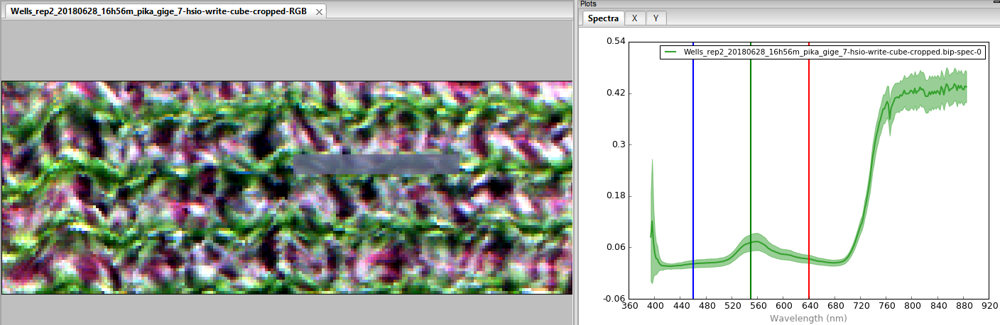
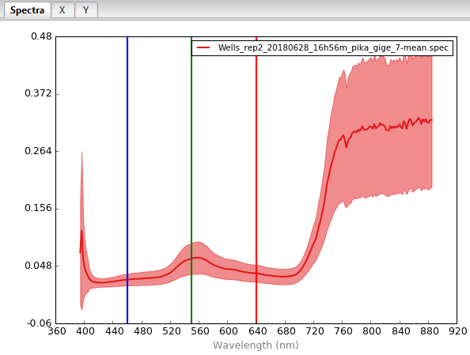

2. Tutorial: hsio¶
2.1. Sample data¶
Sample imagery captured from a Resonon Pika II VIS-NIR line scanning imager and ancillary sample files can be downloaded from this link.
Before trying this tutorial on your own machine, please download the sample files and place into a local directory of your choosing (and do not change the file names). Indicate the location of your sample files by modifying data_dir:
[1]:
data_dir = r'F:\\nigo0024\Documents\hs_process_demo'
2.2. Confirm your environment¶
Before trying the tutorials, be sure hs_process and its dependencies are properly installed. If you installed in a virtual environment, first check we are indeed using the Python instance that was installed with the virtual environment:
[2]:
import sys
print('Python install location: {0}'.format(sys.executable))
Python install location: C:\Users\nigo0024\AppData\Local\Continuum\anaconda3\envs\spec\python.exe
The spec folder that contains python.exe tells me that the activated Python instance is indeed in the spec environment, just as I intend. If you created a virtual environment, but your python.exe is not in the envs\spec directory, you either did not properly create your virtual environment or you are not pointing to the correct Python installation in your IDE (e.g., Spyder, Jupyter notebook, etc.).
2.3. hsio.read_cube¶
Reads in a hyperspectral datacube using the Spectral Python package. [API]
Load and initialize hsio
[3]:
import os
from hs_process import hsio
fname_hdr = os.path.join(data_dir, 'Wells_rep2_20180628_16h56m_pika_gige_7-Radiance Conversion-Georectify Airborne Datacube-Convert Radiance Cube to Reflectance from Measured Reference Spectrum.bip.hdr')
io = hsio() # initialize an instance of the hsio class (note there are no required parameters)
Load datacube using hsio.read_cube
[4]:
io.read_cube(fname_hdr)
io.spyfile
[4]:
Data Source: 'F:\\nigo0024\Documents\hs_process_demo\Wells_rep2_20180628_16h56m_pika_gige_7-Radiance Conversion-Georectify Airborne Datacube-Convert Radiance Cube to Reflectance from Measured Reference Spectrum.bip'
# Rows: 617
# Samples: 1300
# Bands: 240
Interleave: BIP
Quantization: 32 bits
Data format: float32
Check name_long, name_short, and name_plot values derived from the filename
[5]:
print('name_long: {0}'.format(io.name_long))
print('name_short: {0}'.format(io.name_short))
print('name_plot: {0}'.format(io.name_plot))
name_long: -Radiance Conversion-Georectify Airborne Datacube-Convert Radiance Cube to Reflectance from Measured Reference Spectrum
name_short: Wells_rep2_20180628_16h56m_pika_gige_7
name_plot: 7
2.4. hsio.read_spec¶
Reads in a hyperspectral spectrum file using the using the Spectral Python package. [API]
Load and initialize hsio
[6]:
from hs_process import hsio
fname_hdr_spec = os.path.join(data_dir, 'Wells_rep2_20180628_16h56m_pika_gige_7_plot_611-cube-to-spec-mean.spec.hdr')
io = hsio() # initialize an instance of the hsio class (note there are no required parameters)
Load datacube using hsio.read_cube
[7]:
io.read_spec(fname_hdr_spec)
io.spyfile_spec
[7]:
Data Source: 'F:\\nigo0024\Documents\hs_process_demo\Wells_rep2_20180628_16h56m_pika_gige_7_plot_611-cube-to-spec-mean.spec'
# Rows: 1
# Samples: 1
# Bands: 240
Interleave: BIP
Quantization: 32 bits
Data format: float32
Check name_long, name_short, and name_plot values derived from the filename
[8]:
print('name_long: {0}'.format(io.name_long))
print('name_short: {0}'.format(io.name_short))
print('name_plot: {0}'.format(io.name_plot))
name_long: -cube-to-spec-mean
name_short: Wells_rep2_20180628_16h56m_pika_gige_7_plot_611
name_plot: 611
2.5. hsio.set_io_defaults¶
Sets any of the ENVI file writing parameters to hsio; if any parameter is left unchanged from its default, it will remain as-is (i.e., it will not be set). [API]
Load and initialize hsio
[9]:
from hs_process import hsio
io = hsio() # initialize an instance of the hsio class
Check defaults.envi_write
[10]:
io.defaults.envi_write
[10]:
{'dtype': numpy.float32,
'force': False,
'ext': '',
'interleave': 'bip',
'byteorder': 0}
Modify force parameter and recheck defaults.envi_write
[11]:
io.set_io_defaults(force=True)
io.defaults.envi_write
[11]:
{'dtype': numpy.float32,
'force': True,
'ext': '',
'interleave': 'bip',
'byteorder': 0}
2.6. hsio.show_img¶
Displays a datacube as a 3-band RGB image using Matplotlib. [API]
Load hsio and spatial_mod modules
[12]:
from hs_process import hsio # load hsio
from hs_process import spatial_mod # load spatial mod
Load the datacube using hsio.read_cube
[13]:
fname_hdr = os.path.join(data_dir, 'Wells_rep2_20180628_16h56m_pika_gige_7-Radiance Conversion-Georectify Airborne Datacube-Convert Radiance Cube to Reflectance from Measured Reference Spectrum.bip.hdr')
io = hsio() # initialize an instance of the hsio class
io.read_cube(fname_hdr)
Perform simple spatial cropping via spatial_mod.crop_single
[14]:
my_spatial_mod = spatial_mod(io.spyfile) # initialize spatial_mod instance to crop the image
array_crop, metadata = my_spatial_mod.crop_single(pix_e_ul=250, pix_n_ul=100, crop_e_m=8, crop_n_m=3)
Show an RGB render of the cropped image using hsio.show_img
[15]:
io.show_img(array_crop)
2.7. hsio.write_cube¶
Wrapper function that accesses the Spectral Python package to save a datacube to file. [API]
Load hsio and spatial_mod modules
[16]:
from hs_process import hsio # load hsio
from hs_process import spatial_mod # load spatial mod
fname_hdr_in = os.path.join(data_dir, 'Wells_rep2_20180628_16h56m_pika_gige_7-Radiance Conversion-Georectify Airborne Datacube-Convert Radiance Cube to Reflectance from Measured Reference Spectrum.bip.hdr')
io = hsio() # initialize the hsio class
io.read_cube(fname_hdr_in)
Perform simple spatial cropping via spatial_mod.crop_single to generate a new datacube.
[17]:
my_spatial_mod = spatial_mod(io.spyfile) # initialize spatial_mod instance to crop the image
array_crop, metadata = my_spatial_mod.crop_single(pix_e_ul=250, pix_n_ul=100, crop_e_m=8, crop_n_m=3)
Save the datacube using hsio.write_cube.
[18]:
fname_hdr = os.path.join(data_dir, 'hsio', 'Wells_rep2_20180628_16h56m_pika_gige_7-hsio-write-cube-cropped.bip.hdr')
if not os.path.isdir(os.path.dirname(fname_hdr)): # create a new folder named "hsio" if it does not exist
os.mkdir(os.path.dirname(fname_hdr))
io.write_cube(fname_hdr, array_crop, metadata=metadata)
Saving F:\nigo0024\Documents\hs_process_demo\hsio\Wells_rep2_20180628_16h56m_pika_gige_7-hsio-write-cube-cropped.bip
Load the datacube into Spectronon for visualization: 
2.8. hsio.write_spec¶
Wrapper function that accesses the Spectral Python package to save a single spectra to file. [API]
Load and initialize hsio
[19]:
from hs_process import hsio # load hsio
fname_hdr_in = os.path.join(data_dir, 'Wells_rep2_20180628_16h56m_pika_gige_7-Radiance Conversion-Georectify Airborne Datacube-Convert Radiance Cube to Reflectance from Measured Reference Spectrum.bip.hdr')
io = hsio() # initialize the hsio class (note there are no required parameters)
io.read_cube(fname_hdr_in)
Calculate spectral mean via hstools.mean_datacube
[20]:
spec_mean, spec_std, _ = io.tools.mean_datacube(io.spyfile)
fname_hdr_spec = os.path.join(data_dir, 'hsio', 'Wells_rep2_20180628_16h56m_pika_gige_7-mean.spec.hdr')
Save the new spectra to file via hsio.write_spec
[21]:
io.write_spec(fname_hdr_spec, spec_mean, spec_std)
Saving F:\nigo0024\Documents\hs_process_demo\hsio\Wells_rep2_20180628_16h56m_pika_gige_7-mean.spec
Open Wells_rep2_20180628_16h56m_pika_gige_7-mean.spec in Spectronon for visualization: 
2.9. hsio.write_tif¶
Wrapper function that accesses the GDAL Python package to save a small datacube subset (i.e., three bands or less) to file. [API]
Load and initialize hsio
[22]:
from hs_process import hsio # load hsio
fname_hdr_in = os.path.join(data_dir, 'Wells_rep2_20180628_16h56m_pika_gige_7-Radiance Conversion-Georectify Airborne Datacube-Convert Radiance Cube to Reflectance from Measured Reference Spectrum.bip.hdr')
io = hsio() # initialize the hsio class
io.read_cube(fname_hdr_in)
Save an RGB render of the datacube to file via hsio.write_tif
[23]:
fname_tif = os.path.join(data_dir, 'hsio', 'Wells_rep2_20180628_16h56m_pika_gige_7.tif')
io.write_tif(fname_tif, spyfile=io.spyfile, fname_in=fname_hdr_in)
Either `projection_out` is `None` or `geotransform_out` is `None` (or both are). Retrieving projection and geotransform information by loading `hsio.fname_in` via GDAL. Be sure this is appropriate for the data you are trying to write.

Open Wells_rep2_20180628_16h56m_pika_gige_7.tif in QGIS with the plot boundaries overlaid: